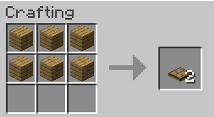

mesa de crafteo usando cualquier tipo de
mesa de crafteo usando cualquier tipo de  tablones y hierro
tablones y hierro
La trampilla es un bloque usado en granjas y en la construcción
Tambien tiene la función parecida a la puerta
Se consigue principalmente en una mesa de crafteo usando cualquier tipo de tablones y hierro

 Hacha de cualquier material
Hacha de cualquier material